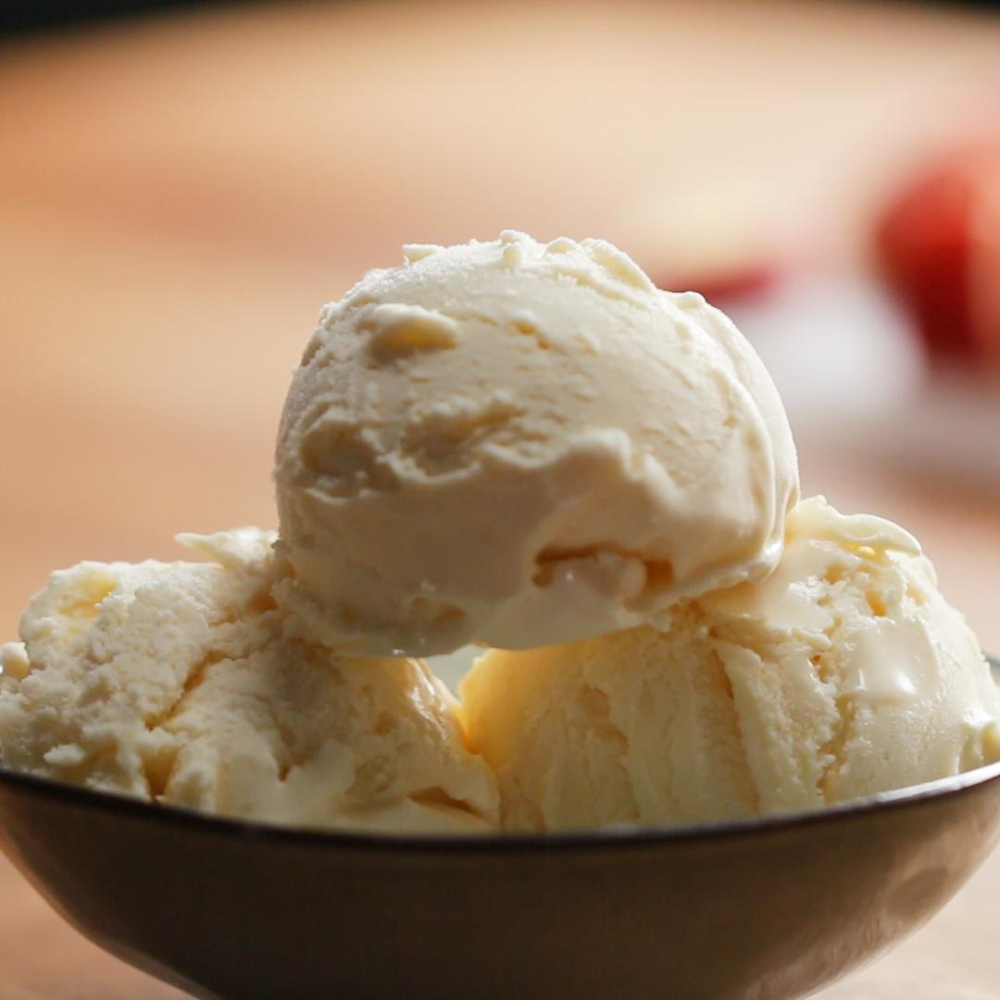

Add walnuts to the bowl of a food processor and pulse until crumbly.
Add mushrooms and blend until finely chopped.
In a large skillet over medium heat, add 1 tablespoon olive oil and add the mushroom walnut mixture, cooking for 5-8 minutes or until all moisture has evaporated.
Add soy sauce and cumin and cook, stirring occasionally, until dry. Transfer mixture to a bowl.
Add 1 tablespoon of olive oil to skillet. Add the onion and cook, stirring occasionally, until semi-translucent, about 3 minutes.
Add garlic, salt, pepper, and tomato paste, and cook for for another 3-5 minutes until fragrant. Set aside.
Add black beans and onion mixture to food processor, and blend until mostly smooth.
Transfer mixture to bowl and add beets, rice, vegan mayo, worcestershire sauce, and liquid smoke, and stir until combined.
Add in vital wheat gluten and use hands to knead burger mixture together until all wheat gluten is fully incorporated.
Form burgers into 4 patties about 3-inches (7 cm) in diameter and 1-inch (2 cm) thick.
In large cast-iron pan, over medium-high heat cook patties about 5 minutes on each side.
Add on vegan cheese slices and melt.
Assemble burger with vegan mayo, lettuce, tomato, and red onion.
Nutrition Information
Amount Per Serving
Calories 876
80
Fat 34g
2.5g
Carbs 110g
11.9g
Fiber 10g
3.7g
Sugar 12g
6.4g
Protein 35g
3.4g
Vegan Vanilla Ice cream

Ingredients
3 cups cashews(390 g), ½ cup (65 g) if just making enough for the ice cream
¼ cup water(60 mL)
1 ¼ cups organic sugar(250 g)
4 tablespoons cocoa butter
4 tablespoons coconut oil
1 teaspoon salt
1 cup coconut milk(240 mL)
1 teaspoon vanilla extract
1 vanilla bean
ice cream maker
Directions
Place the cashews in a large bowl. Add enough room-temperature water to cover the cashews. Cover the bowl with a kitchen towel and soak overnight.
Place the bowl of an ice cream machine in the freezer overnight.
Place the bowl of an ice cream machine in the freezer overnight.
Reserve 1 cup (240 ml) of cashew milk for the ice cream and store the rest in the refrigerator for up to a week for another use.
In a small saucepan over medium heat, combine the water and sugar and cook, stirring constantly, until the mixture is clear, about 2 minutes. Whisk in the cocoa butter, coconut oil, and salt. Remove the pan from the heat and set aside.
In a blender, combine the cashew milk and coconut milk. Blend on low speed. With the blender running, pour in the sugar mixture to emulsify. Continue until well-blended, about 2 minutes.
Pour the mixture into a large metal bowl and mix in the vanilla extract. Scrape in the seeds from the vanilla bean and whisk to combine.
Chill the base in the refrigerator for 1 hour.
Add the chilled base to the ice cream maker and churn for 1 hour, or as long as the machine requires, until thick and creamy.
Transfer the ice cream to a loaf pan and freeze overnight.